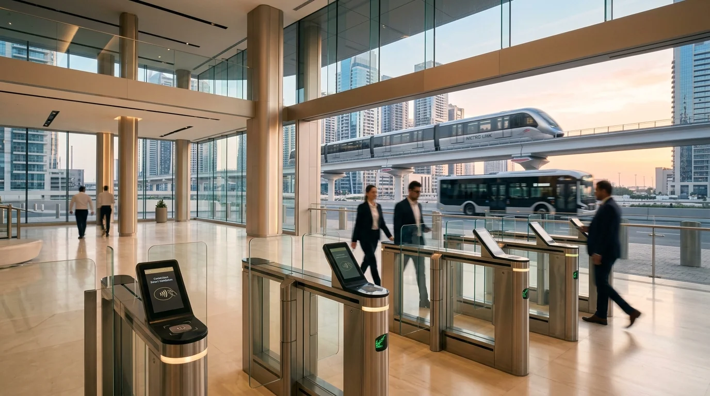
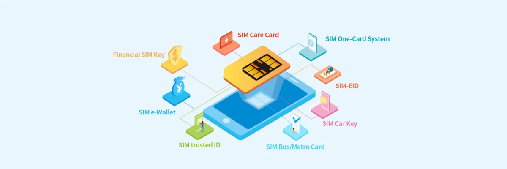

Develop
Shape the opportunity.Define the project, establish its scope and build a delivery model around market and operating needs.
Gentech Group develops, finances, integrates and operates large-scale platforms across digital payments, smart mobility, telecommunications and secure technology infrastructure.
Three operating hubs. One integrated approach.
Conceptual network illustration.
Gentech Group develops, finances, integrates and operates technology-driven infrastructure across global markets.
Define the project, establish its scope and build a delivery model around market and operating needs.
Coordinate investment strategy and financing structures that support a project’s long-term development.
Bring hardware, software and specialist partners together around a coherent system architecture.
Plan implementation, local support and operating responsibilities throughout the project lifecycle.
An integrated international technology and investment group
Bringing investment strategy, project structuring and capital coordination together for long-term infrastructure development.
02Developing technology-led infrastructure from feasibility and system design to integration planning and operational readiness.
03Connecting transport operators, passenger access and payment technologies through integrated mobility programs.
04Coordinating secure payment products and acceptance architectures with appropriately licensed banking and payment partners.
05Connecting devices, vehicles and infrastructure with communications products selected for each market and operating environment.
06Design, customisation, personalisation, production management and international supply of cards and secure payment products.

SOUTH AFRICA PROGRAM · ILLUSTRATIVE IMAGEA contractually established 10-year national digital transportation and payments program under Gentech’s agreement with SANTACO acting through TaxiChoice.
Program scope and potential reach are not measures of active vehicles, daily passengers or live users.
Explore the programDistinct roles across capital coordination, technology integration and local implementation.
Capital, investment & strategic coordination
GENTECH CAPITAL HOLDINGS INC.35 Esterbrooke Avenue, Unit 1114, Toronto, Ontario M2J 2C6, CanadaExplore this platformTechnology, integration & international trade
GENTECH GLOBAL FZ-LLCVUNE1303, Compass Building - Al Hulaila, Al Hulaila Industrial Zone-FZ, Ras Al Khaimah, United Arab EmiratesExplore this platformOperations & program implementation
GENTECH CAPITAL HOLDINGS (PTY) LTD18 Melrose Boulevard, Melrose Arch, Melrose North, Gauteng 2196, South AfricaExplore this platformAt Gentech Group, we believe the true measure of technology lies in the trust, convenience, and enduring economic opportunity it creates in people’s daily lives.
Mustafa Sertkaya
Chairman, Gentech Group
Strategic Leadership • Payment Technologies • International Infrastructure
Read the Chairman’s messageDesign, personalisation, production management and international supply.
Explore technology ↗Product selection and integration with licensed payment partners.
Explore technology ↗
Communications products for connected infrastructure and mobility.
Explore technology ↗A contractually established 10-year national digital transportation and payments program under Gentech’s agreement with SANTACO acting through TaxiChoice.
Technology implementation is coordinated around project requirements. Banking and regulated payment services require appropriately licensed partners.
Discuss a partnershipContractual scope, operating roles and the distinction between architecture and deployment.
Discuss a project, a partnership or a technology requirement with Gentech Group.